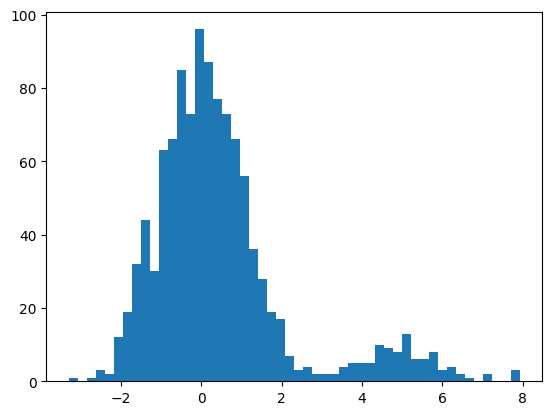
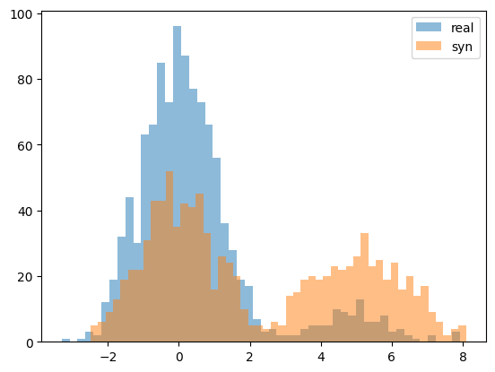
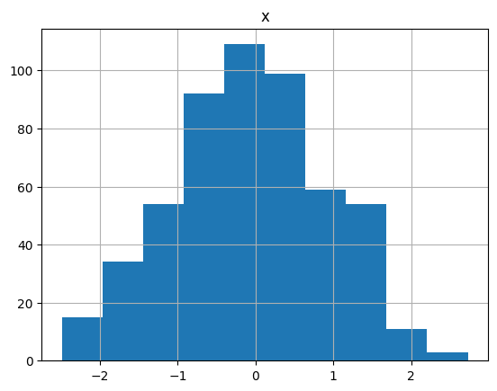
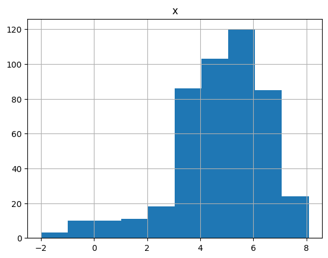

import numpy as np
import pandas as pd
import matplotlib.pyplot as plt
from ctgan import CTGAN
from ctgan import load_demo[CTGAN] CTGAN ToyEX
imports
data
x1 = np.random.randn(1000).tolist()
y1 = ['A']*1000
x2 = (np.random.randn(100)+5).tolist()
y2 = ['B']*100df = pd.DataFrame({'x':x1+x2, 'y':y1+y2})
df| x | y | |
|---|---|---|
| 0 | -0.557100 | A |
| 1 | 1.586981 | A |
| 2 | 1.867204 | A |
| 3 | -1.377673 | A |
| 4 | -0.013144 | A |
| ... | ... | ... |
| 1095 | 5.758539 | B |
| 1096 | 7.837548 | B |
| 1097 | 5.462159 | B |
| 1098 | 4.565613 | B |
| 1099 | 2.790882 | B |
1100 rows × 2 columns
plt.hist(df.x,bins=50)(array([ 1., 0., 1., 3., 2., 12., 19., 32., 44., 30., 63., 66., 85.,
73., 96., 87., 77., 73., 66., 56., 36., 28., 19., 17., 7., 3.,
4., 2., 2., 2., 4., 5., 5., 5., 10., 9., 8., 13., 6.,
6., 8., 3., 4., 2., 1., 0., 2., 0., 0., 3.]),
array([-3.30563479, -3.08115892, -2.85668304, -2.63220717, -2.4077313 ,
-2.18325542, -1.95877955, -1.73430368, -1.5098278 , -1.28535193,
-1.06087606, -0.83640018, -0.61192431, -0.38744844, -0.16297256,
0.06150331, 0.28597918, 0.51045506, 0.73493093, 0.9594068 ,
1.18388268, 1.40835855, 1.63283442, 1.8573103 , 2.08178617,
2.30626204, 2.53073792, 2.75521379, 2.97968966, 3.20416554,
3.42864141, 3.65311728, 3.87759316, 4.10206903, 4.3265449 ,
4.55102078, 4.77549665, 4.99997252, 5.22444839, 5.44892427,
5.67340014, 5.89787601, 6.12235189, 6.34682776, 6.57130363,
6.79577951, 7.02025538, 7.24473125, 7.46920713, 7.693683 ,
7.91815887]),
<BarContainer object of 50 artists>)
CTGAN
# Names of the columns that are discrete
discrete_columns = ['y']
ctgan = CTGAN(epochs=500) # 겁나많이해야하네?
ctgan.fit(df, discrete_columns)
# Create synthetic data
df2 = ctgan.sample(1000)Exception ignored on calling ctypes callback function: <function _ThreadpoolInfo._find_modules_with_dl_iterate_phdr.<locals>.match_module_callback at 0x7f37484ab430>
Traceback (most recent call last):
File "/home/coco/anaconda3/envs/py38/lib/python3.8/site-packages/threadpoolctl.py", line 400, in match_module_callback
self._make_module_from_path(filepath)
File "/home/coco/anaconda3/envs/py38/lib/python3.8/site-packages/threadpoolctl.py", line 515, in _make_module_from_path
module = module_class(filepath, prefix, user_api, internal_api)
File "/home/coco/anaconda3/envs/py38/lib/python3.8/site-packages/threadpoolctl.py", line 606, in __init__
self.version = self.get_version()
File "/home/coco/anaconda3/envs/py38/lib/python3.8/site-packages/threadpoolctl.py", line 646, in get_version
config = get_config().split()
AttributeError: 'NoneType' object has no attribute 'split'
Exception ignored on calling ctypes callback function: <function _ThreadpoolInfo._find_modules_with_dl_iterate_phdr.<locals>.match_module_callback at 0x7f37484ab430>
Traceback (most recent call last):
File "/home/coco/anaconda3/envs/py38/lib/python3.8/site-packages/threadpoolctl.py", line 400, in match_module_callback
self._make_module_from_path(filepath)
File "/home/coco/anaconda3/envs/py38/lib/python3.8/site-packages/threadpoolctl.py", line 515, in _make_module_from_path
module = module_class(filepath, prefix, user_api, internal_api)
File "/home/coco/anaconda3/envs/py38/lib/python3.8/site-packages/threadpoolctl.py", line 606, in __init__
self.version = self.get_version()
File "/home/coco/anaconda3/envs/py38/lib/python3.8/site-packages/threadpoolctl.py", line 646, in get_version
config = get_config().split()
AttributeError: 'NoneType' object has no attribute 'split'df2.groupby('y').count()| x | |
|---|---|
| y | |
| A | 530 |
| B | 470 |
plt.hist(df.x,bins=50,alpha=0.5,label='real')
plt.hist(df2.x,bins=50,alpha=0.5,label='syn')
plt.legend()<matplotlib.legend.Legend at 0x7f3730581f70>
df2[df2.y=='A'].hist()array([[<Axes: title={'center': 'x'}>]], dtype=object)
df2[df2.y=='B'].hist()array([[<Axes: title={'center': 'x'}>]], dtype=object)